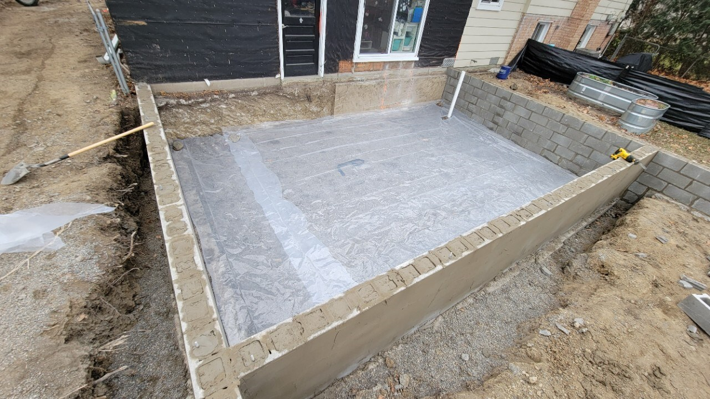

Flatwork
Overview
Flatwork covers concrete slabs, patios, walks, driveways, and interior floor slabs for crawl spaces or basements. These installs require proper subgrade prep, reinforcement, and finishing to avoid cracking and settling.
Process
-
Prepare subgrade
- Remove topsoil, organic material, and soft spots
- Compact by hand or better use plate compactor
- Install 4" or more of compacted gravel base (more for high traffic, industrial/commercial, etc)
-
Install vapor barrier and drainage prep (for interior slabs)
- Install passive radon pipe if needed (4" tee with perforated pipe, turned up and out of the slab
- Install perimeter drain tile if required and connect to sump or daylight discharge (this can also service passive or active radon system)
- Lay 6 mil poly (or thicker) over compacted base to prevent vapor and radon intrusion
- Overlap seams 12" minimum
-
Set grade and forms
- Stake forms at proper height using laser or string line
- For exterior flatwork, establish slope (minimum 1/8" per foot away from structure)
- For interior slabs, match existing floor elevation or confirm design height
- Secure forms with stakes driven tight to prevent blowouts
-
Install reinforcement
- Wire mesh (6x6 W1.4xW1.4 typical) or rebar per plan
- Place on chairs or plan to pull into the mix during pour
- Overlap mesh at least one full square (best practice)
-
Complete underground plumbing and electrical before the pour
- All underground drains, supply lines, cleanouts, and conduit must be installed and inspected before concrete covers them
- Confirm locations for cleanouts, shut-offs, and floor drains
- Install conduit and sleeves for electrical runs that pass through or under the slab
- Schedule and pass underground plumbing and electrical inspections before proceeding
-
Schedule inspection (if required)
- Interior basement/crawl slabs often require compaction and vapor barrier inspection before pour
- Confirm gravel depth, compaction, poly placement, and reinforcement location (this inspection can be common for driveway approaches)
-
Pour and place concrete
- Order correct mix (3,500–4,000 psi typical for residential flatwork; 3,000 psi for basement slabs)
- Adjust concrete spec if you plan to pump, pour in cold weather, etc
- Place concrete in forms, working from back to front
- Vibrate or tamp to remove air pockets and consolidate around edges
- Screed to level using straight edge on forms
- Pull up reinforcement into mid-slab position during pour if not already on chairs
-
Finish surface
- Bull float to bring cream to surface and smooth high spots
- Edge along forms with edging tool
- Wait for bleed water to evaporate before final troweling (timing depends on weather and mix)
- Trowel smooth for interior floors or broom finish for exterior traction
- Install control joints or saw cut layout per plan (typically every 10' or less, depending on shape this can be decorative)
- Tool in control joints when pouring a heated slab, so you don't cut wire or pipes
-
Cure and protect
- Keep surface moist for 7 days (if needed use wet burlap, plastic sheeting, or curing compound)
- If you Plan to wet or mist the concrete, start in the morning before the sun comes up when a slab is cool. Avoid shocking a hot slab with water, it will crack.
- Protect from traffic, freezing, and rapid drying
- Strip forms after 24–48 hours depending on weather and strength gain
Inspection
Interior basement or crawl slabs typically require a compaction and vapor barrier inspection before the pour. The inspector verifies proper gravel depth, compaction, poly sheeting placement, radon prep (if applicable), and reinforcement before concrete is placed. Exterior flatwork rarely requires inspection in residential remodeling unless tied to a permit for a larger addition or deck. Some Jurisdictions require inspection on a driveway or approach where it connects to a public road.
Common issues and how to avoid them
- Cracking from poor subgrade: Ensure full compaction and remove all organic material before base install
- Uneven surface or ponding: Set forms to proper slope (exterior) or level (interior) and screed carefully during pour
- Blowouts or form movement: Stake forms securely and brace against concrete pressure during placement
- Premature troweling: Wait for bleed water to evaporate before final finish to avoid surface weakness and scaling
- No control joints or improper spacing: Plan and cut control joints at 10' intervals or per design to control cracking location
- Rapid drying or freeze damage: Cure properly for 7 days and protect from temperature extremes, especially in first 48 hours

Resources
- Example Concrete Price Sheet
- 2015 Michigan Residential Code – Chapter 4 Foundations
- 2024 International Residential Code – Chapter 4 Foundations
Last revised 01/03/2026
Feedback on this page
Spot an error or have a suggestion? Send a quick note. Name and email are optional.